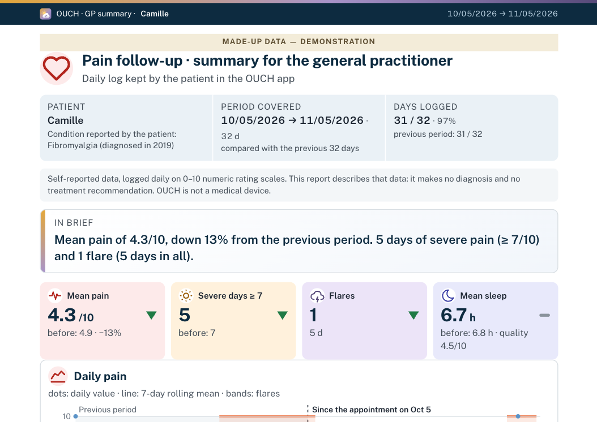
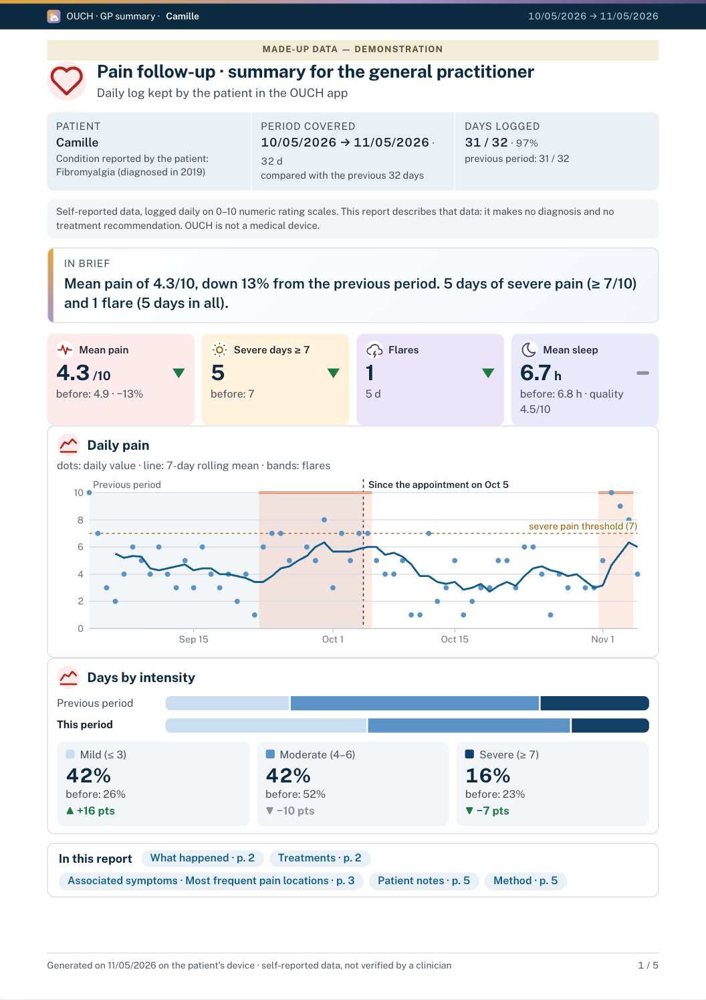

An OUCH report,a user guide.
Your patient keeps a pain diary in OUCH, free and open source, for fibromyalgia and other chronic pain: a minute a day, no account, the data stays on their phone. Here is the report they built from it for your appointment, and how to read it.

The first page, in order

12345- 1The bannerThe period covered (since the last appointment of the same kind), the earlier period it is compared with, and the share of days logged. Missing days are never filled in.
- 2“In brief”One sentence, from the same figures as the tiles.
- 3The key figures and their arrowThe arrow gives the direction of change since the earlier period, not its size nor whether it exceeds usual variation (see “Key points”, page 3).
- 4The curveDots: each day’s pain. Line: 7-day rolling mean. Shaded bands: “harder” days (flares). Dashes: severe pain threshold (7).
- 5The days by intensityTwo bars (the period, the one before); for each class, the share, the earlier share and the gap in points.
A flare, according to OUCH
OUCH’s own definition, with no consensus; not a diagnostic criterion. Hard periods the patient marks themselves are counted separately.
What the patient adds
Their questions, their note after the appointment, their hard periods and the leads they kept: in their words, not measured. Comparisons between days, never causes.
Their questions come first in the report; their note is included only if they wish.
Two versions
Family doctor
Key figures, curve, days by intensity compared, treatments, patient’s questions.
Pain clinic
A summary, then six numbered parts: pain, treatments, symptoms, habits, questions and notes, method.
Keep in mind
- Self-reported data, not verified.
- Fatigue, sleep and mood scales are not validated.
- A link between days is never a cause.
- OUCH describes: no diagnosis, no treatment advice.

- Reading an OUCH report 1 page
- Leaflet for professionals 2 pages
- Methodology note 12 pages: formulas, thresholds, sources
To download in the app (“Are you a healthcare professional?” on the first screen) or on the release page. Demo mode: 90 made-up days.